← All workProject 4 of 4
Project 04Designed and simulated, not built
Electric Go-Kart Drivetrain
25 mph electric kart drivetrain designed in Inventor: ME1114 motor, #35 chain reduction, 1-1/4 in live axle, slotted motor mount and bearing hangers, with a launch simulation and FEA.
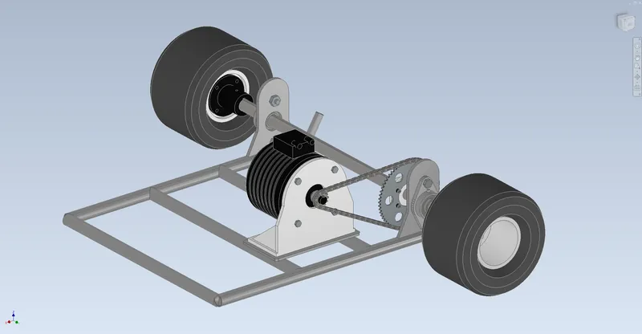
01Overview
A rear drivetrain for a 185 kg electric kart (driver included) that has to reach 25 mph, designed in Inventor from one design file so the CAD, calculations and FEA share the same numbers. A Motenergy ME1114 brushless motor on a 350 A, 48 V controller drives a 1-1/4 in 4140 live axle through a single ANSI #35 chain stage (13/60 teeth, 4.615:1). The gearing was set by back-EMF, not power: it puts 25 mph at 3595 rpm, so the kart still reaches 25 mph on a nearly flat 16S LiFePO4 pack. The motor sits on a machined 6061-T6 bracket in four tensioning slots, and the axle runs in UC206 insert bearings on 4130 hangers welded to the chassis rails. Two Inventor parameters drive the assembly: ChainLine keeps the sprockets coplanar, and ChainAdjust slides the motor to tension the chain. The FEA led to a redesign of both mounts. Designed and simulated only; nothing has been built.
Tools Autodesk Inventor 2027 / Python / NumPy / SciPy / scikit-fem / gmsh / Matplotlib
What I did
- Sized the gearing from the motor's back-EMF instead of its power: 13/60 puts 25 mph at 3595 rpm, so the kart still makes 25 mph on a nearly flat pack while the controller governs it on a full one.
- Wrote a longitudinal launch model with the controller, battery-sag and voltage limits, rotating inertia and traction with load transfer. It gives 0-25 mph in about 2 s, gradeability and range.
- Closed the 98-link chain loop exactly and phased both sprockets' teeth to its pitch points, so the modelled chain sits in the gaps. Two Inventor parameters keep the sprockets coplanar and slide the motor in its tensioning slots, both verified with interference sweeps.
- Used gmsh + scikit-fem FEA on the motor bracket, bearing hanger and axle under launch, 2.5 g bump, 1.5 g cornering and kerb-strike cases. The FEA drove a redesign: the hanger went from 1/4 to 3/8 in with blended corners (SF 1.75 to 3.57, deflection 3.0 to 0.9 mm), and the oversized bracket lost 0.55 kg.
Specification
- Vehicle
- 185 kg with an 80 kg driver, 60% rear, CG 280 mm, wheelbase 1040 mm, rear track 1120 mm, 11x7.10-5 rear tyres (rolling radius 137 mm)
- Motor / controller
- Motenergy ME1114 PMSM (0.12 Nm/A, 65 Nm peak, 5000 rpm, 13.2 kg), 350 A 48 V controller = 41.7 Nm launch torque
- Battery
- 16S LiFePO4 40 Ah, 51.2 V nominal, 2.05 kWh
- Reduction
- ANSI #35 chain, 13T / 60T = 4.615:1, 98 links, 283.9 mm centres, chain line Y 250 mm
- Axle and bearings
- 1-1/4 in x 40 in 4140 pre-hard live axle, full-length 1/4 in keyway; UC206-20 inserts in UCFL206 housings
- Mounts
- 6061-T6 motor bracket with 4 x 24 mm tensioning slots (3/8 in plates); 3/8 in 4130 bearing hangers saddled onto 1-1/4 in rails; A36 base plate
- Mass (Inventor)
- 30.5 kg drivetrain incl. motor, plus 5.4 kg rear wheels
- Assembly
- 61 occurrences, 26 unique files, 180 constraints, 0 DOF; ASME screws, locknuts and washers from step.parts
02Views7 renders


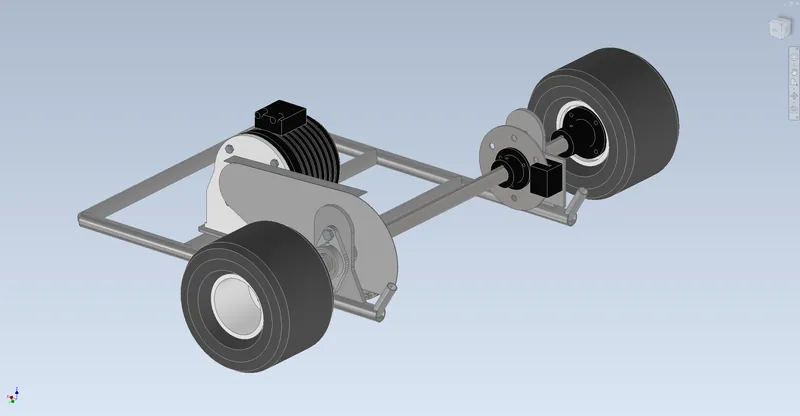

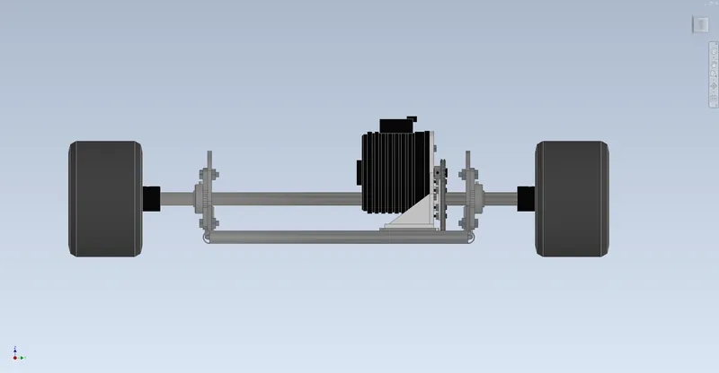

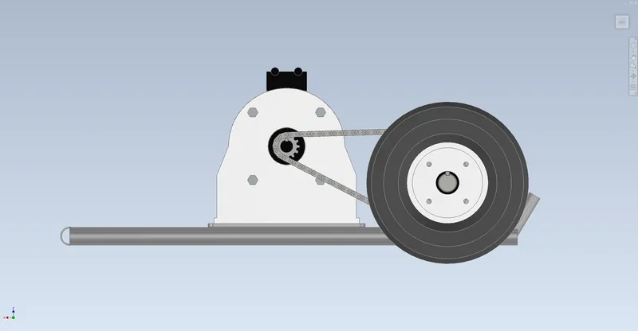

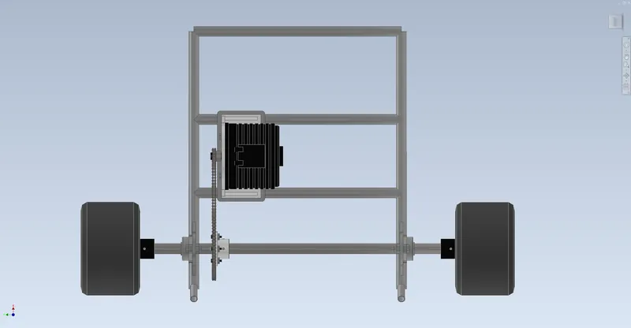

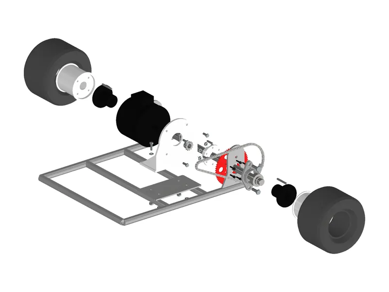

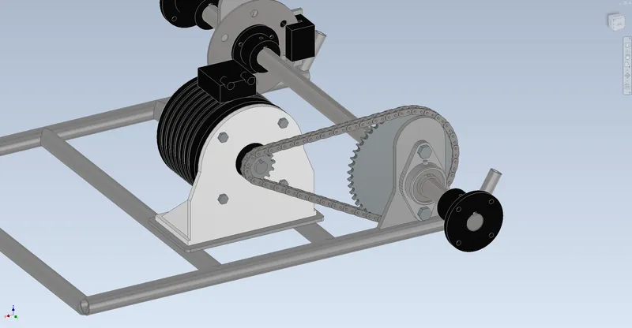
03Drawings4 sheets

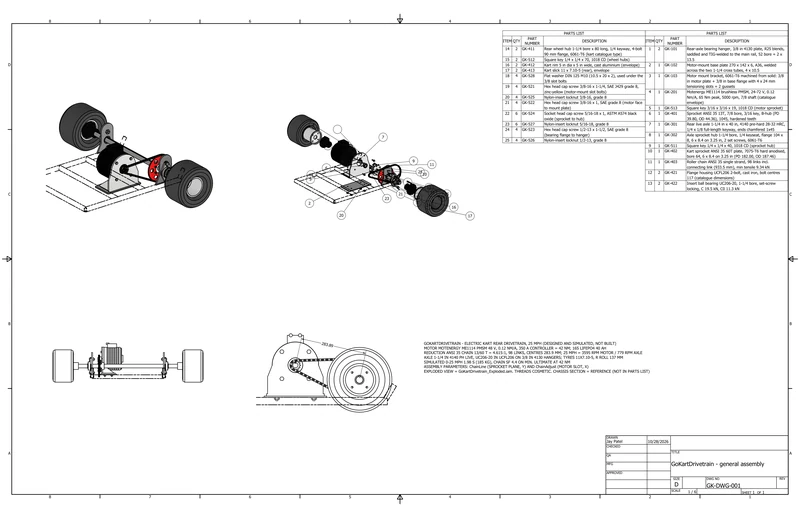

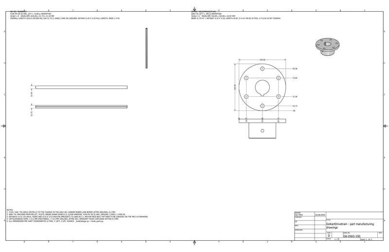

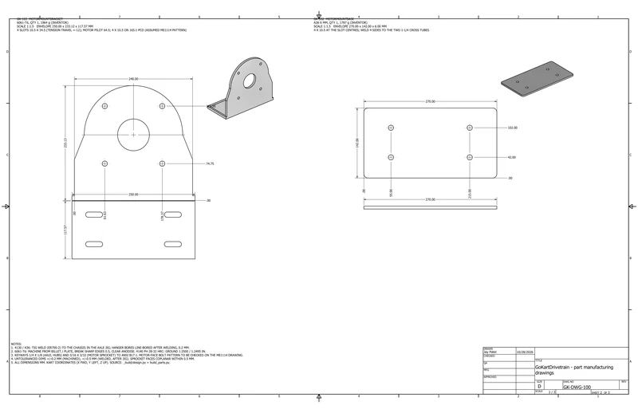

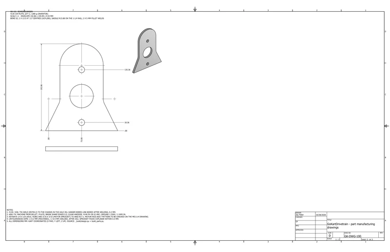
04Analysissimulated unless stated
A1 Performance

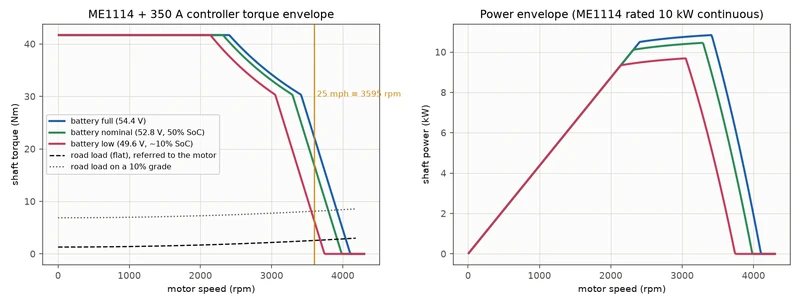

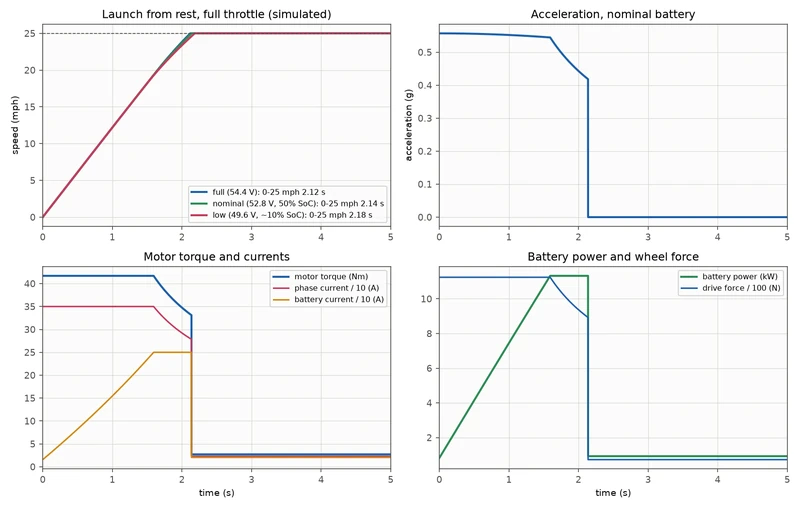

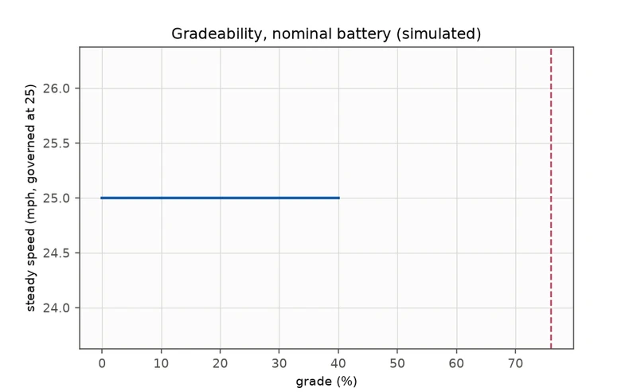
A2 Drivetrain loads

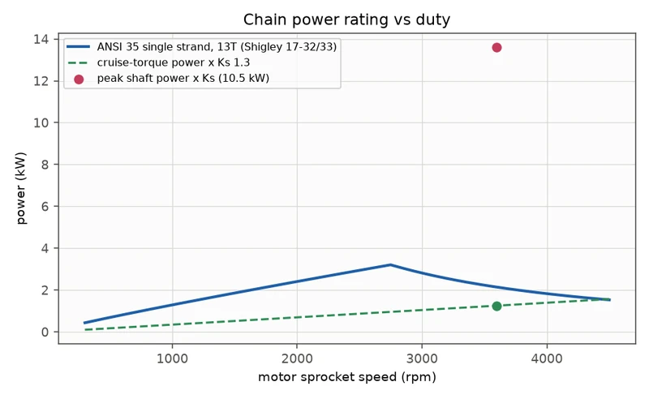

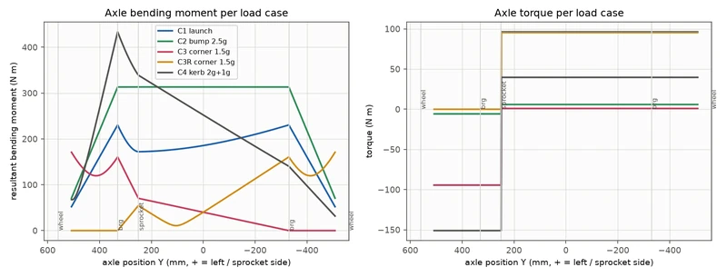

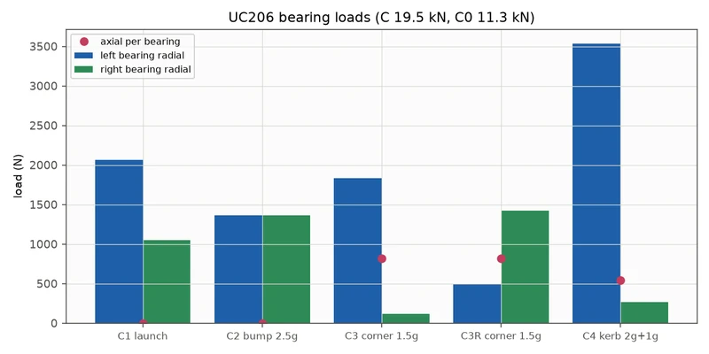
A3 Structural FEA

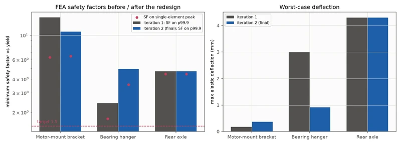

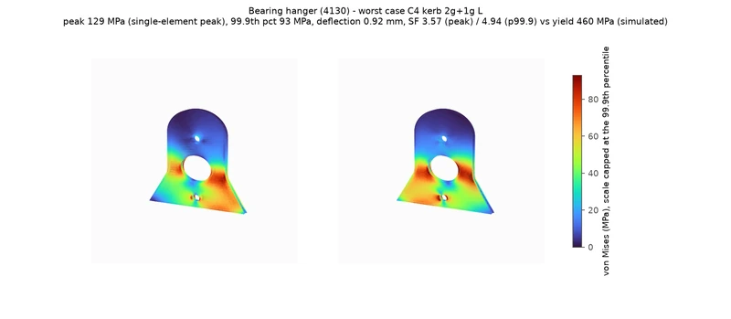

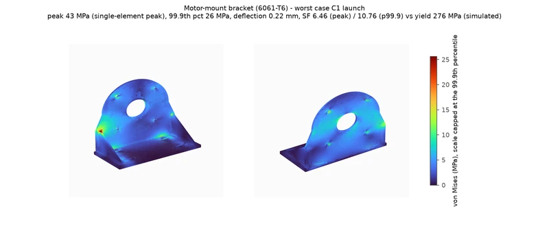

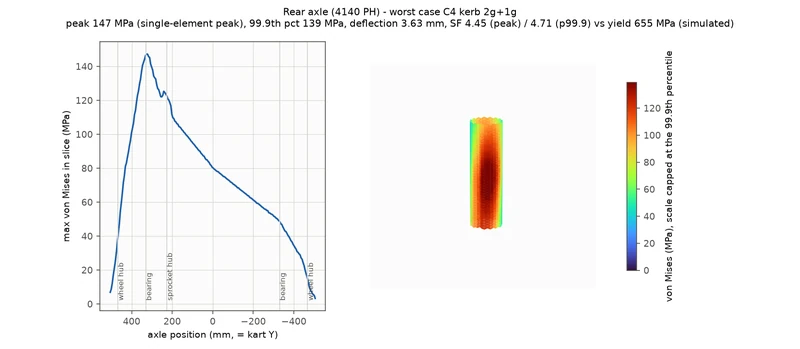
05Results10 checks
| Check | Result | Margin / status |
|---|---|---|
| Speed and gearing | 25 mph = 779 rpm axle / 3595 rpm motor; free top speed 27.3 mph nominal, 25.7 mph at 10% charge (governed at 25) | Calculated |
| Torque margin at 25 mph | Needs 2.56 Nm; 17.1 Nm available on a nominal pack (6.7x), 6.5 Nm on a low pack (2.5x) | Calculated |
| 0-25 mph | 1.98 s on a nominal pack (2.41 s low), peak 0.66 g, 11.3 kW battery peak | Simulated |
| Gradeability and range | Holds 25.6 mph up a 20% grade; ~61 km range at a steady 25 mph | Simulated |
| Chain #35 | 2.1 kN tension at full torque, SF 4.4 on 9.34 kN minimum ultimate; 7.4 m/s at 25 mph | Calculated |
| Axle 4140 | Static SF 4.5 (2.7 with keyway Kt), fatigue SF 1.97 (DE-Goodman); FEA peak within 2% of beam theory | Calculated and simulated |
| Bearings UC206-20 | L10 about 42,000 h at an 18 mph average duty cycle, static SF 2.8 | Calculated |
| FEA bearing hanger (4130) | 129 MPa peak / 93 MPa at the 99.9th percentile, 2 g kerb + 1 g side load | SF 3.57 / 4.94 vs yield (simulated) |
| FEA motor bracket / axle | 43 / 147 MPa peak (launch / kerb case) | SF 6.5 / 4.5 vs yield (simulated) |
| Interference and alignment | 0 clashing pairs across the ±12 mm tension slot and the chain-line sweep; sprockets coplanar to 0.00 mm | Checked in Inventor |
06Files8 downloads
- Calculation reportPDF · 1.2 MB
- Assembly drawingPDF · 371 kB
- Manufacturing drawingsPDF · 182 kB
- Bill of materialsCSV · 7 kB
- Load casesCSV · 1 kB
- Launch simulation dataCSV · 25 kB
- Test summaryMD · 7 kB
- Assembly STEPSTP · 5.0 MB
07Limits and assumptionsread before quoting a number
Designed and simulated only: the drivetrain has not been built, and every number is a model prediction. Motor data comes from the Motenergy ME1114 listing; the rotor inertia, face bolt pattern and outer shape are assumed. The controller and battery are class assumptions and are not modelled in CAD. The kart mass, CG, rolling resistance, CdA and tyre friction are typical assumed values. Loads are quasi-static limit cases. Sprockets, chain, bearings, hubs, rims and tyres are catalogue-dimension models; the fasteners are vendor STEP files. FEA is linear elastic without weld fillets or keys, and both peak and 99.9th-percentile safety factors are quoted. Every made part is steel or aluminium, so there is no 3D-print file.